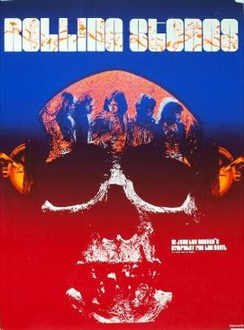

Jean-Luc Godard
1968
100 minutes
TITLE: One Plus One TEXT PLACEHOLDER 207
This film is also known as Sympathy for the Devil, and it's essentially a documentary film by Jean-Luc Godard that captures the Rolling Stones composing their song, "Sympathy for the Devil". Being Godard, of course, it's not a straight-up documentary and there are several other staged and mostly irrelevant scenes included as well, including some weird shots of the Black Panthers reading from revolutionary texts with a bunch of captive women being dragged off to be shot, or a porn shop with a bunch of Nazi literature on display. And there's a woman whose character is credited as Eve Democracy in one particularly heavy-handed statement.
This is a more...bizarre...version of that ever popular music documentary where you get to "sit in on the sessions" and hear early versions of some song that will later become a huge hit. It's the kind of music which, as a guy, you can force a woman to listen to and elbow her in the ribs and tell her "Whoa, hey listen to that, that's the riff from such-and-such song!!!" to which they are obliged to giggle and acknowledge what an expert you are on music while you quote a few facts about Bob Dylan that you learned from a 33 1/3 book you perused during a long session at the bookstore.
Speaking of which, whoa! This film was being filmed and the eponymous song was being written during the period when Papa Brainworm RFK Sr. himself was assassinated, so you can hear when they were in the process of writing the song and they changed the line about "...who killed John Kennedy" to the line "...who killed the Kennedys". Isn't that wild, bro?
You were never properly religious, or at least not raised to believe that a jealous and hateful god would damn your soul to hell for soul for not believing in him just because an adult told you to do so. At least not a God that was as good and just and kind as everyone said he was. It seemed unbelievable that an all-powerful and all-good being with that much power over you would give you just enough leeway in your personal beliefs to see if you could be tricked into some kind of heretical belief that he wasn't good or didn't exist at all. Or if you could just remain ignorant of the fact that everything was as the Bible said it was. It seemed unbelievable that if such a good did exist, he would take delight in creating a world in which your soul could be damned to the depths of hell for eternity to be tormented by evil demons who would take pleasure in tormenting you in every way possible.
In Hell, demons awaited you who, sanctioned by God, would spend eternities over and over making you suffer in ways that human beings could only dream of. Maybe just to make it extra miserable, other damned souls would take their own turns finding those who were weaker so they could amuse themselves between their own torments with their own abuses, physical and sexual and emotional. Imagine Hitler's own tormented soul, down in Hell for his crimes alongside you for simply doubting in God and never being properly forgiven, and Hitler and his friends get to eternally rape and torture and torment you just to make Hell the Helliest place imaginable. The torments of the damned must be worse than anyone ever faced on earth, after all, so anything you went through on earth would be much, much worse in Hell. The damned were fair game, and even the good people on earth love to get a few shots in when someone is declared fair game.
On the other hand, you found Hell pretty believable when you were young. And someone had to be in charge. So believing in Satan seemed like a bit of a no-brainer.
Time to choose something different: